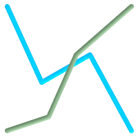

名前
ST_Crosses — 与えられたジオメトリが共通の内部の点を持ち、かつそうでない点を持つ場合にはTRUEを返します。
概要
boolean ST_Crosses(geometry g1, geometry g2);
説明
ST_Crossesは、二つのジオメトリをとり、インタセクションが「空間的にクロスする」、すなわちジオメトリが共通の内部の点を持ち、かつそうでない点を持つ場合にTRUEを返します。ジオメトリの内部のインタセクションは、空集合であってはならず、二つのジオメトリの最大次元より低い次元でなければなりません。さらに言うと、二つのジオメトリのインタセクションは、元のジオメトリのいずれとも一致してはなりません。これらを満たさない場合にはFALSEを返します。
数学的に述べると、次のようになります。
TODO:適切なMathMLマークアップかgif画像をここに挿入する.単純なHTMLマークアップはIEとFirefoxではうまく動作しない.
DE-9IMでは次のようになります。
T*T****** (for Point/Line, Point/Area, Line/Areaの場合)
T*****T** (for Line/Point, Area/Point, Area/Lineの場合)
0******** (for Line/Lineの場合)
他の次元の組み合わせでは、FALSEが返されます。
OpenGIS Simple Feature Specificationでは、この述語はPoint/Line, Point/Area, Line/Line, Line/Areaの場合についてのみ定義されています。JTS/GEOSでは、Line/Point, Area/Point, Area/Lineについて拡張しています。これによって関係が対称になっています。
![[重要]](images/important.png) | |
Enhanced: 3.0.0 |
![[注記]](images/note.png) | |
この関数の呼び出しによって、ジオメトリで使用可能なインデクスを使用したバウンディングボックスの比較が自動的に行われます。 |
 This method implements the OpenGIS Simple Features
Implementation Specification for SQL 1.1. s2.1.13.3
This method implements the OpenGIS Simple Features
Implementation Specification for SQL 1.1. s2.1.13.3
This method implements the SQL/MM specification. SQL-MM 3: 5.1.29
例
次に示す図全てで、TRUEが返されます。
|
|
| 
|
roads (道路)とhighways (高速道路)の2つのテーブルを持っている場面を考えます。
CREATE TABLE roads ( id serial NOT NULL, the_geom geometry, CONSTRAINT roads_pkey PRIMARY KEY (road_id) );
|
CREATE TABLE highways ( id serial NOT NULL, the_gem geometry, CONSTRAINT roads_pkey PRIMARY KEY (road_id) );
|
次のようなクエリを使って、highwayとクロスするroadsのリストを決定します。
SELECT roads.id FROM roads, highways WHERE ST_Crosses(roads.the_geom, highways.the_geom);